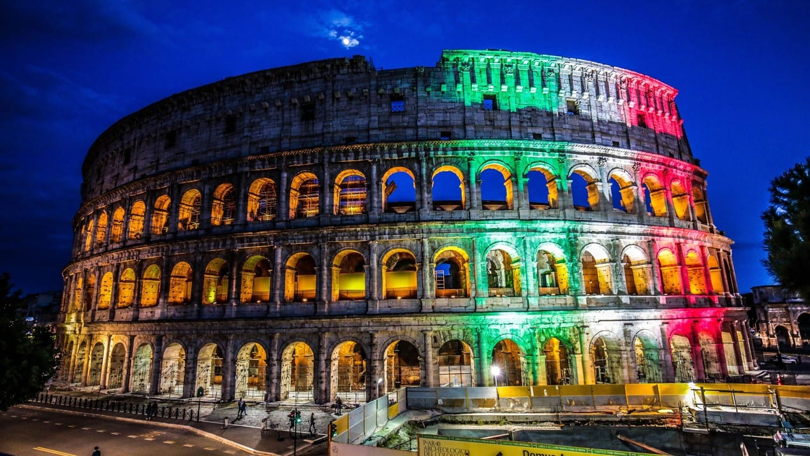
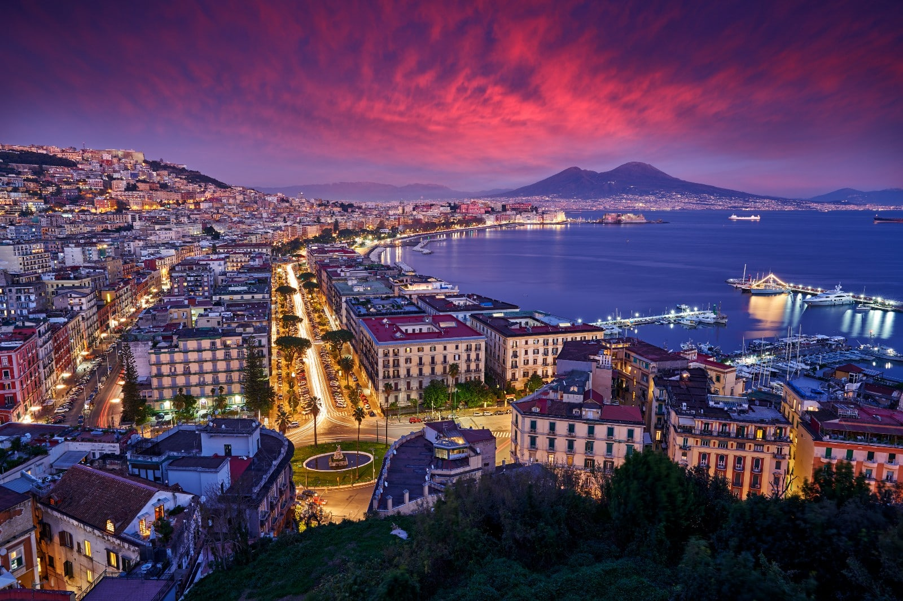
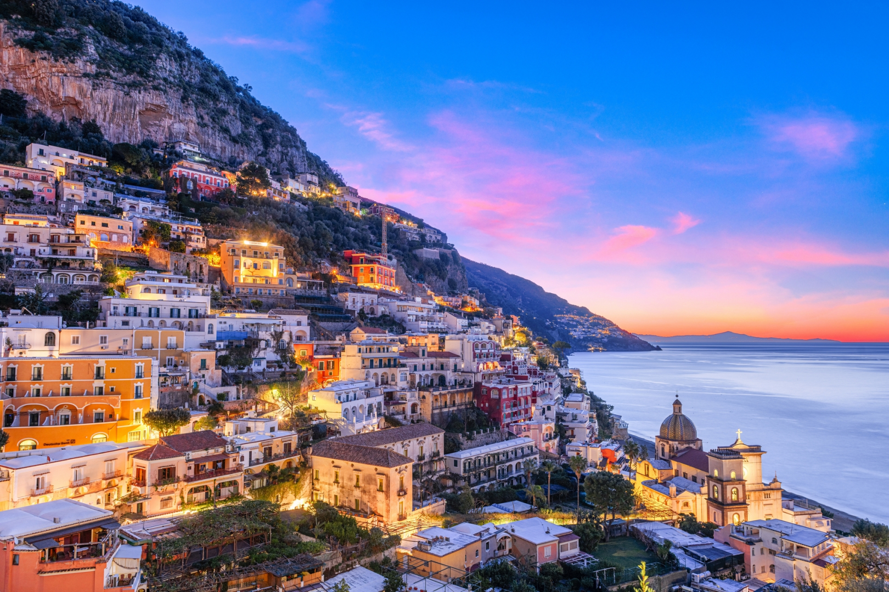

Рим → Неаполь → Амальфі
Історія, смак Італії та узбережжя, яке складно забути
📍 Rome — серце античності та культури

Рим — це місто, де кожен крок веде крізь тисячоліття історії. Величний Colosseum, руїни Roman Forum та держава у державі — Vatican City створюють унікальну атмосферу. Прогулянки вузькими вуличками, кава на площах і фонтани, як Trevi Fountain, роблять Рим ідеальним стартом подорожі. Вайб: історія + архітектура + жива атмосфера міста
📍 Naples — енергія півдня та найкраща піца

Неаполь — це вибух кольорів, звуків і смаків. Тут народилася піца, і кожен шматочок — це вибух смаку. Вуличні ринки, барвисті будинки та вид на Везувій створюють неповторну атмосферу цього міста. Звідси відкривається вид на вулкан Mount Vesuvius, а поруч — легендарні руїни Pompeii. Історичний центр входить до списку UNESCO і вражає своєю атмосферою. Вайб: їжа + енергія + колорит
📍 Amalfi Coast — один із найкрасивіших берегів світу

Амальфі — це драматичні скелі, бірюзове море і міста, що ніби "висять" над водою. Positano — ікона узбережжя з кольоровими будинками. Amalfi — історичне місто з величним собором. Ravello — панорамні види та спокій. Це місце для повільних прогулянок, морських краєвидів і моментів, які хочеться зберегти. Вайб: море + природа + естетика
✨ Чому варто обрати цей маршрут
Ця подорож поєднує три різні Італії:
- Рим — це історія, культура і жива атмосфера міста, яке ніколи не спить.
- Неаполь — це вибух енергії, колориту та найкращої піци в світі.
- Амальфі — це казкове узбережжя з неймовірними краєвидами та спокоєм.
Корисні посилання для планування подорожі
🏨 Забронювати готель
Вибери дати — і ми знайдемо кращі варіанти в кожному місті маршруту